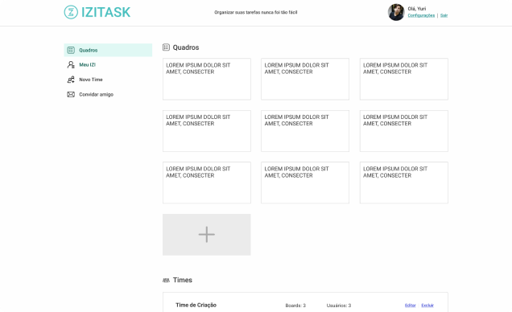

Tenha controle dos seus projetos
Visualize todos os seus projetos e tenha controle de tudo que acontece de forma rápida e
resumida
Veja o andamento dos seus projetos no modelo Kanban
"Agilidade é a habilidade de criar e responder a mudanças com respeito ao resultado financeiro do
projeto em um turbulento ambiente de negócios. Agilidade é a habilidade de balancear flexibilidade com
estabilidade". (Highsmith, Jim. Agile Project Management, 2002)